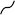

9 Assembling functions
When we need a new function for some purpose, we practically always build it out of existing functions. For instance, a parameterized function like \[A \sin\left(\frac{2 \pi}{P}x\right) + C\] is built by assempling together a straight-line input scaling, a naked \(\sin()\) function, and another straight-line function for scaling the output from \(\sin()\).
In this chapter, we’ll introduce three general frameworks for combining functions: linear combination, composition, and multiplication.
9.1 Linear combination
One of the most widely used sorts of combination is called a linear combination. The mathematics of linear combination is, it happens, at the core of the use of math in applications, whether that be constructing a Google-like search engine or analyzing medical data to see if a treatment has a positive effect.
You’ve worked for many years with one kind of linear combination: polynomials. No doubt you’ve seen functions11 like \[f(x) \equiv 3 x^2 + 5 x - 2\]
There are three modeling functions in this polynomial. In this case, as in polynomials generally, they are all power-law functions: \(g_0(x) \equiv 1\), \(g_1(x) \equiv x\), and \(g_2(x) \equiv x^2\). With these functions defined, we can write the polynomial \(f(x)\) as \[f(x) \equiv 3 g_2(x) + 5 g_1(x) - 2 g_0(x)\] Each of the functions is being scaled by a quantity—3, 5, and -2 in this example—and the scaled functions are added up. That’s a linear combination; scale and add. (Later, we’ll see that the scalars generally come with units. So we might well have a metric polynomial and an equivalent traditional-unit polynomial. Just wait.)
Notice that we said \(g_0(x) \equiv 1\) is a power-law function. Why? Since \(x^0=1\) for all \(x\), we might equally well have written \(g_0(x) \equiv x^0\) which is visibly a power-law function.
We’re just trying to emphasize that a polynomial is a linear combination of power-law functions, in particular those power-law functions with whole-number, positive exponents. The individual functions, say, \(x^2\) or \(x^5\) are called monomials. A polynomial is a combination of monomials, just like a chemical polymer is a combination of monomers.
There are other places where you have seen linear combinations:
- The parameterized sinusoid \[A \sin\left(\frac{2 \pi}{P}t\right) + C\] is a linear combination of the functions \(h_1(t) \equiv \sin\left(\frac{2 \pi}{P} t\right)\) and \(g_0(t) \equiv 1\). The scalars are \(A\) and \(C\).
- The parameterized exponential \[A e^{kt} + C\] The functions being combined are \(e^{kt}\) and \(g_0(t) \equiv 1\). The scalars are, again, \(A\) and \(C\).
- The straight line function \(a x + b\). The functions being combined are \(x\) and \(1\), the scalars are \(a\) and \(b\).
Note that neither the parameterized exponential or the parameterized sinusoid is a polynomial.
There are a few reasons for us to be introducing linear combinations here.
- You will see linear combinations everywhere once you know to look for them.
- There is a highly refined mathematical theory of linear combinations that gives us powerful ways to think about them as well as computer software that can quickly find the best scalars to use to match input-output data.
- The concept of linear combination generalizes the simple idea that we have been calling “scaling the output.” From now on, we’ll use the linear-combination terminology and avoid the narrower idea of “scaling the output.”
- Many physical systems are described by linear combinations. For instance, the motion of a vibrating molecule or a helicopter in flight or a building shaken by an earthquake are described in terms of simple “modes” which are linearly combined to make up the entire motion. More down to Earth, the timbre of a musical instrument is set by the scalars in a linear combination of pure tones.
- Many modeling tasks can be put into the framework of choosing an appropriate set of simple functions to combine and then (letting the computer) figure out the best scalars to use in the combination.
Even better, there is an automatic, reliable, and fast algorithm for finding the scalars for a set of functions that are to be combined to match data as closely as possible. So the modeler just has to select the functions to be used, the computer can find the coefficients. (We’ll explore the mathematics and methods of linear combinations, usually called linear algebra, in Block 5.)
Example: The tides as a linear combination of sinusoids.
Example: Models of inequality
Lorenz curve: Connects (0,0) and (1,1) and is never concave down.
- Any power-law with an exponent of 1 or greater.
- Any linear combination of such power-laws with the scalars adding to 1.
- Product of two Lorenz curves is a Lorenz curve.
\((1 - (1-p)^\alpha)\)
\(p^\beta\left(1 - (1-p)^\alpha\right)\)
9.2 Function composition
To compose two functions, \(f(x)\) and \(g(x)\), means to apply one of the functions to the output of the other. “\(f()\) composed with \(g()\)” means \(f(g(x))\). This is generally very different from “\(g()\) composed with \(f()\)” which means \(g(f(x))\).
For instance, suppose you have recorded the outdoor temperature over the course of a day and packaged this into a function \(\mbox{AirTemp}(t)\): temperature as a function of time \(t\). Your digital thermometer uses degrees Celsius, but you want the output units to be degrees Kelvin. The conversion function is \[\mbox{CtoK}(C) \equiv C + 273.15\] Notice that CtoK() takes temperature as input. With this, we can write the “Kelvin as a function of time” as \[\mbox{CtoK}\left(\mbox{AirTemp}(t)\right)\] It’s important to distinguish the above time \(\rightarrow\) Kelvin function from something that looks very much the same but is utterly different: \(\mbox{AirTemp}\left(\mbox{CtoK}(t)\right)\). As a matter of arithmetic, you can put time as an input to CtoK(). But it has a completely different meaning in terms of the real world. If time were measured in hours, then CtoK\((t)\) would be looking at the temperature eleven and a half days ago, instead of the temperature at time \(t\).
We used \(C\) as the name of the input to CtoK(). Shouldn’t it be something like \(x\) or \(y\)?
Keep in mind that the names of the inputs to a function can be anything whatsoever, so long as they are used consistently in the function algorithm. If we wanted, we could call the first input to any function \(x\), or for that matter \(y\) or giraffe.
The point of the notation \(\mbox{CtoK}(C) \equiv C + 273.15\) is to make it utterly clear that \(C\) is the name we’re using for the input by listing it in the parentheses that follow the function name CtoK(). This, unlike high-school notation, allows us great freedom in the choice of names.
We can use that freedom to make it easier to communicate with other people. (And remember, one of those other people is “future you.”) We used the name \(C\) to reinforce the message that CtoK() converts celsius to kelvin, and not vice versa.
Here is a simple, approximate formula for the length of day (in hours) as a function of latitude \(L\) and the declination angle \(\delta\) of the sun.
\[\text{day_length}(L, \delta) \equiv \frac{2}{15} \arccos\left(-\tan(L)*\tan(δ)\right)\] The declination angle is the latitude of the point on the earth’s surface pierced by an imagined line connecting the centers of the earth and the sun. On the summer solstice, it is \(23.44^\circ\), the longest day of the year.
A computer implement must look different, since \(L\) and \(\delta\) are typically provided in degrees while the tan() and other trigonometric functions in most computer languages expect units of radians. The conversion is easy: \(\text{deg2rad}(d) \equiv \frac{\pi}{180} d\). The conversion the other way is \(\text{rad2deg}(r) \equiv \frac{180}{\pi} r\).
In order to get the day-length formula to work in a computer, we have to compose the \(\tan()\) function with deg2rad(). The output of acos() is in radians, so we have to convert it back to degrees. Like this:
Q-32: Using an R sandbox, calculate the length of the day at latitude \(39^\deg\) on the longest day of the year, which is when the declination of the sun is \(23.44^\circ\). How long is it?
13.9 hours []
14.7 hours (+) []
14.9 hours []
15.1 hours []
Now to make a plot of day length as a function of day of the year. Of course, day_length(L, d) does not take day of the year into account. What’s missing is to know the declination of the sun as a function of calendar day.
We’ll represent calendar day as a number \(n\) that runs from 0 at the start of January 1st to 365 at the end of December 31. Given this convention, the declination of the sun is
delta_sun <- makeFun(-23.44*cos((2*pi/365)*(n+10) ) ~ n)Composing day_length() with delta_sun() (on the d argument only) we get a function of day of year n:
slice_plot(
day_length(39, delta_sun(n)) ~ n,
domain(n=c(0,365))
)Q-33: How long is the day on April Fools (\(n=90\)) at Latitude 39N? (Use a sandbox for the calculation.)
12.38 hours (+) []
12.59 hours []
12.64 hours []
12.74 hours []
9.3 The modeling polynomial
Sometimes, in order to model some simple relationship you need to build a function whose graph has a simple, curving shape.
A simple but surprisingly powerful approach is to use a low-order polynomial. The order of a polynomial is the highest exponent on the input. For example, a straight-line function, \(g_1(x) \equiv a_0 + a_1 x\), is a first-order polynomial. A quadratic, \(g_2(x) \equiv b_0 + b_1 x + b_2 x^2\) is a second-order polynomial.
Many modelers are tempted to extend the technique to third-, fourth-, fifth-order and even higher. This is only rarely worthwhile since all second-, fourth-, sixth- and higher-even-order monomials have basically the same U-shape, like a referee signalling a touch-down. Similarly, first-, third-, fifth- and higher odd-order monomial have similar  shapes.
An ofttimes better approach is to compose the polynomial with a curved but monotonic function, such as a logarithm.
Explain why we are now using subscripts for the names of scalars.
9.4 Tukey’s ladder (optional)
[[Tukey’s ladder]] Using a simple straight line with input composition and/or output composition. You can get a variety of curve shapes using only a linear function.
As exercises?
Log transformation of used car prices
[[Perceived brightness or loudness]] is a log scale.
9.5 Function multiplication
The third in our repertoire of methods for making new function out of old is plain old multiplication. With two functions \(f(x)\) and \(g(x)\), the product is simply \(f(x)g(x)\).
It’s essential to distinguish between function multiplication and function composition:
\[\underbrace{f(x) g(x)}_\mbox{multiplication}\ \ \ \ \underbrace{f(g(x)) \ \ \mbox{or}\ \ \ g(f(x))}_\mbox{composition}\]
In function composition, only one of the functions—the interior function is applied to the overall input, \(x\) in the above example. The other function gets its input from the output of its partner.
In multiplication, each of the functions is applied to the input individually. Then their outputs are multiplied to produce the overall output.
In function composition, the order of the functions matters: \(f(g(x))\) and \(g(f(x))\) are in general completely different functions.
In function multiplication, the order doesn’t matter because multiplication is commutative, that is, if \(a\) and \(b\) are each quantities, \(a \times b = b \times a\).
Transient vibration
A guitar string is plucked to produce a note. The note is, of course, vibrations of the air created by vibrations of the string.
After plucking, the note fades away. An important model of this is a sinusoid (of the correct period to correspond to the frequency of the note) times an exponential.
Function multiplication is used so often in modeling that you’ll see it in many modeling situations. Here’s one example that is important in physics and communication: the wave packet. Overall, the wave packet is a localized oscillation as in Figure @ref{fig:wave-packet}.
Figure 9.1: A wave packet constructed by multiplying a sinusoid by a hump function.
This is the product of two simple functions: a hump times a sinusoid.
Figure 9.2: The two components of the wave packet in Figure 9.1
EXERCISES: Say which two kinds of functions are being multiplied here.
 ::: {.etude-question}
::: {.etude-question}Q-34: What are the two basic modeling functions being multiplied?
A sinusoid and another sinusoid with a faster period. (+) []
A hump and a sinusoid. []
A sigmoidal function and a sinusoid. []
[]
:::
Q-35: What is the period of the envelope?
10 [It’s true that the broad peaks in the overall function occur every 10 time units. But a sine wave has two excursions from zero every cycle, one positive and one negative. So if the period of the envelope were 10, we would see an amplitude of the faster sinusoid near zero every 5 time units.]
20 (+) []
30 [If this were so, the dips in amplitude of the faster sign would occur every 15 time units.]
Other examples along the same lines.
EXERCISE: Provide a sigmoid and a series of humps. Ask the student to sketch out the product.
9.6 All together now!
Two or all three of the techniques for combining functions—linear combinations, function composition, and function multiplication—can be used in the same function.
Consider the function for the length of the day \[\text{day_length}(L, \delta) \equiv \frac{2}{15} \arccos\left(-\tan(L)*\tan(δ)\right)\] The 2/15 is scaling the output of \(\arccos()\): scaling is in linear combination.
The \(\arcos()\) is being composed with an interior function that is itself a scaled product of two functions.
9.7 Exercises
It’s very common in communications systems to have a signal that is a sine-wave carrier that is modulated by another function. That is, the carrier is multiplied by the other function: waveform(t) = modulator(t) \(\times\) carrier(t).
Here are four examples in each of which a sine with a period of about 2 units is modulated by another function, one of the modeling functions we have studied.
Q-38: (A) Of what sort is the function that is modulating the carrier?
exponential (+) []
hump []
sigmoid []
sine []
 ::: {.etude-question}
::: {.etude-question}Q-39: (B) Of what sort is the function that is modulating the carrier?
exponential []
hump (+) []
sigmoid []
sine []
:::
Q-40: (C) Of what sort is the function that is modulating the carrier?
exponential []
hump []
sigmoid (+) []
sine []
Q-41: (D) Of what sort is the function that is modulating the carrier?
exponential []
hump []
sigmoid []
sine (+) []
EXERCISE: The algebra of composition of the hump function \(e^{-\frac{x^2}{2}}\). Parabola is a nice starting point. But we want it to go to zero asymptotically, not to \(-\infty\). That might seem a tall order, but the exponential function is up to it.